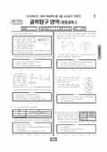

문제지

2023학년도 6월 모의평가 · 2022년 6월 시행
2023학년도 6모 과학탐구 생명과학Ⅰ 1등급컷은 원점수 47점(추정), 표준점수 최고점은 68점입니다.
원점수 1등급컷은 공식 발표값이 아니라 EBSi·입시기관 값입니다. 등급별 값은 등급컷 표, 출처 구분은 데이터 원칙에 있습니다.

시험지를 먼저 풀어 보세요. 등급컷·표준점수·난이도는 흐리게 가려 뒀어요.
| 등급 | 원점수 | 표준점수 | 백분위 | 누적 |
|---|---|---|---|---|
| 1 | 47 | 66 | 95 | 5.89% |
| 2 | 44 | 63 | 89 | 12.49% |
| 3 | 39 | 59 | 78 | 23.78% |
| 4 | 31 | 53 | 58 | 44.09% |
| 5 | 24 | 47 | 40 | 60.99% |
| 6 | 17 | 41 | 23 | 78.59% |
| 7 | 12 | 37 | 11 | 91.02% |
| 8 | 7 | 33 | 3 | 98.3% |
등급별 컷 · 입시기관 3곳 원점수 추정 종합(EBSi·메가스터디·이투스) · 만점 50점
한국교육과정평가원이 교육부 보도자료로 공개한 표준점수 도수분포로 계산했습니다.
EBSi 응답자 기준으로 가장 많이 틀린 문항은 19번(2점)이고, 오답률은 73.9%입니다. 상위 15문항 중 2문항은 정답보다 한 오답을 고른 사람이 더 많았습니다(19번: 정답 ⑤ 26.1%, ④ 35.2%). 오답률 50%를 넘은 문항은 7개입니다.
| 순위 | 문항 | 배점 | 오답률 | 정답 | 많이 고른 오답 |
|---|---|---|---|---|---|
| 1 | 19번 | 2점 | 73.9% | ⑤ | ④ 35.2% |
| 2 | 17번 | 3점 | 73.5% | ③ | ④ 36% |
| 3 | 11번 | 3점 | 65.2% | ② | ④ 25.1% |
| 4 | 13번 | 3점 | 58.6% | ① | ④ 23.2% |
| 5 | 10번 | 2점 | 56.1% | ② | ③ 18.5% |
| 6 | 15번 | 3점 | 53.5% | ④ | ③ 20.2% |
| 7 | 7번 | 3점 | 52.9% | ④ | ② 26% |
| 8 | 3번 | 2점 | 40.7% | ④ | ⑤ 30.8% |
| 9 | 8번 | 3점 | 40.5% | ⑤ | ④ 25.1% |
| 10 | 4번 | 2점 | 40% | ② | ④ 13.6% |
| 11 | 2번 | 2점 | 38.1% | ⑤ | ③ 25.2% |
| 12 | 16번 | 2점 | 35.2% | ① | ⑤ 13.5% |
| 13 | 12번 | 3점 | 33.2% | ③ | ⑤ 21.8% |
| 14 | 9번 | 2점 | 30% | ① | ⑤ 15.1% |
| 15 | 18번 | 3점 | 26.7% | ③ | ① 16.4% |
EBSi 가채점 응답자 기준 · 전 문항 중 오답률 상위 15문항
출처: EBSi 역대 등급컷·오답률 공개 화면. 가채점에 참여한 EBSi 이용자 응답이라 전체 응시자 정답률과는 다를 수 있습니다.
발행 기관: 한국교육과정평가원(KICE). 파일 위치: 이 사이트가 보관한 사본. 저작권은 발행 기관에 있습니다. 원본과 다르거나 게시 중단이 필요하면 연락처로 알려 주세요. 등급컷 출처 구분은 데이터 원칙에서 설명합니다.
막대 색은 역대 대비 난이도 · 진한 막대가 이 시험 · 막대를 누르면 그 회차로 이동
| 회차 | 1등급컷 | 표점 최고 | 1등급 표점 | 난이도 |
|---|---|---|---|---|
| 6모2023학년도이 시험 | 47 | 68 | 66 | 보통 |
| 수능2022학년도 | 42 | 72 | 65 | 매우 어려움 |
| 9모2022학년도 | 45 | 71 | 66 | 어려움 |
| 6모2022학년도 | 45 | 70 | 66 | 어려움 |
생명과학Ⅰ은 표준점수 최고점이 68점이었고, 오답률 50%를 넘은 문항은 7개였습니다.
가장 많이 틀린 19번(2점, 73.9%)은 ABO식 혈액형과 두 형질을 함께 다룬 가족 유전 문항, 17번(3점, 73.5%)은 유전자형에 따라 표현형이 세 가지로 나뉘는 형질 등을 다룬 가계도 문항이었습니다.
11번(3점, 65.2%)은 두 민말이집 신경의 흥분 전도와 전달 문항, 13번(3점, 58.6%)은 서로 다른 개체의 세포에 들어 있는 염색체 그림으로 종과 성별을 판단하는 문항이었습니다.
ABO식 혈액형이 포함된 유전 문항은 혈액형으로 가능한 유전자형을 먼저 확정하고 다른 형질과의 연관 여부를 따지는 순서를 지키는 것이 중요합니다. 이 회차 과학탐구는 지구과학Ⅱ(85점)와 물리학Ⅰ(67점)의 표준점수 최고점 차이가 18점이었습니다. 시험 전체 흐름은 이 회차의 회차 해설에 정리했습니다.